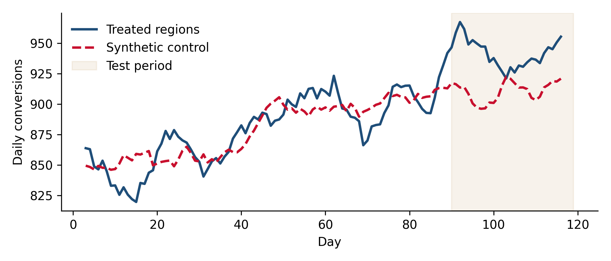
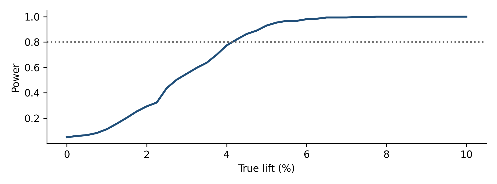

Chapter 6 Geo experiments
Whether a channel that cannot be randomized at the user level (TV, out-of-home, audio, paid social or search measured on business outcomes) is incremental, and by how much per euro, measured on the system-of-record outcome rather than on tracked conversions.
6.1 When geo tests are the right tool
A geo experiment randomizes places instead of people. Some regions get a change in media (more, less or none) and the rest continue as usual. Because the outcome is measured as an aggregate per region and day, the method needs no user-level tracking at all. That makes it the natural choice when:
- the channel cannot be randomized at the user level (TV, radio, out-of-home, print);
- you want the outcome from your own backend, including offline and cross-device conversions, instead of the platform’s tracked conversions;
- you want to check a platform’s own lift study with an independent method (Chapter 8);
- you need an experiment to calibrate a marketing mix model (Chapter 11), which works at the same aggregate level.
The price is statistical power. You have tens of units, not millions, and regions are noisy and different from each other. Most of the craft of geo testing is about getting enough power out of few, heterogeneous units.
6.2 Design choices
Unit. The smallest geography at which media can be bought separately and outcomes can be measured reliably. In the US this is often the DMA. In Europe, whole countries are almost always too few and too different to serve as units; use administrative regions (NUTS-2 or NUTS-3), postal-code areas or commuting zones, which group areas where people live and work together and so reduce spillover.
Number of units and treated share. More units means more power. With 30 to 60 regions, treating 20% to 50% of them is typical; the best split depends on how much of the business you are willing to put at risk.
Assignment. Two approaches work:
- Stratified randomization: sort regions by size (or by a pre-period outcome), form blocks of similar regions, and randomly pick treated regions within each block. This keeps the design-based guarantee of randomization while balancing size.
- Matched selection: choose treated regions and controls to maximize pre-period similarity (as GeoLift and Google’s matched markets tools do). It can increase power, but the guarantee now rests on the pre-period fit carrying over into the test period.
Treatment type.
| Treatment | What changes | What it measures |
|---|---|---|
| Go-dark holdout | Media switched off in treated regions | Average incremental return of current spend |
| Heavy-up | Extra spend in treated regions | Marginal return of extra spend at the current level |
| Scale-back (inverse) | Spend reduced in treated regions | Marginal return of the last units of spend |
These answer different questions. A go-dark test tells you whether the channel works at all; a heavy-up or scale-back tells you whether the next or last euro works, which is what an allocation decision needs (Chapter 1).
Duration and cooldown. Long enough to accumulate power and to cover at least two full weekly cycles; for channels with long-lasting effects (TV, brand campaigns), add a cooldown period after the test during which the outcome is still measured, because effects persist after spend stops.
6.3 Worked example: a heavy-up test on 40 regions
We simulate 120 days of daily conversions in 40 regions of very different sizes, with a shared weekly pattern, a shared trend, a national random walk and slow region-specific drift. After 90 pre-period days, 8 treated regions receive extra spend for 30 days, with a true lift of 6%.
Assignment is stratified: regions are sorted by pre-period size into 8 blocks of 5, and one region per block is randomly treated.
import numpy as np
import pandas as pd
from scipy.optimize import minimize
rng = np.random.default_rng(21)
G, T, T0 = 40, 120, 90 # regions, days, first test day
t = np.arange(T)
size = rng.lognormal(np.log(80), 0.7, G) # baseline daily conversions per region
national = 1 + 0.12 * np.sin(2 * np.pi * t / 7) + 0.0015 * t + np.cumsum(rng.normal(0, 0.006, T))
regional = 1 + np.cumsum(rng.normal(0, 0.004, (G, T)), axis=1) # slow region-specific drift
mu = size[:, None] * national[None, :] * regional
# Stratified randomization: 8 blocks of 5 similar-sized regions, one treated per block
pre_size = mu[:, :T0].mean(1)
blocks = np.argsort(pre_size).reshape(8, 5)
treated = np.array([rng.choice(b) for b in blocks])
is_t = np.isin(np.arange(G), treated)
LIFT = 0.06
mu_obs = mu.copy()
mu_obs[np.ix_(is_t, t >= T0)] *= 1 + LIFT
y = rng.poisson(mu_obs).astype(float)
print(f"Treated regions: {is_t.sum()}, share of pre-period conversions: "
f"{y[is_t, :T0].sum() / y[:, :T0].sum():.0%}")## Treated regions: 8, share of pre-period conversions: 19%The estimator is a synthetic control: a weighted combination of control regions, with non-negative weights summing to one, chosen to track the treated regions’ total as closely as possible in the pre-period. The test-period gap between the treated total and its synthetic twin is the effect estimate.
def synth_effect(y, treated_mask, T0):
target = y[treated_mask].sum(0)
X = y[~treated_mask]
X = X * (target[:T0].mean() / X[:, :T0].mean(1))[:, None] # put controls on treated scale
k = X.shape[0]
sse = lambda w: ((target[:T0] - w @ X[:, :T0]) ** 2).sum()
w = minimize(sse, np.full(k, 1 / k), method="SLSQP", bounds=[(0, 1)] * k,
constraints={"type": "eq", "fun": lambda w: w.sum() - 1}).x
cf = w @ X
lift = target[T0:].sum() / cf[T0:].sum() - 1
return lift, target, cf
est, target, cf = synth_effect(y, is_t, T0)
pre_mape = np.mean(np.abs(target[:T0] / cf[:T0] - 1))
print(f"Estimated lift: {est:+.1%} (true {LIFT:+.0%}); pre-period MAPE {pre_mape:.1%}")## Estimated lift: +3.8% (true +6%); pre-period MAPE 3.4%A point estimate alone is not a result. To get its uncertainty we use placebo tests: repeat the exact same procedure many times on sets of 8 control regions that received no treatment. The spread of those placebo “effects” is the noise the method produces when the truth is zero.
controls = np.where(~is_t)[0]
placebo = []
for _ in range(300):
fake = np.zeros(G, bool)
fake[rng.choice(controls, 8, replace=False)] = True
keep = ~is_t # truly treated regions excluded
placebo.append(synth_effect(y[keep], fake[keep], T0)[0])
placebo = np.array(placebo)
lo, hi = est - np.quantile(placebo, [0.975, 0.025])
p_val = (np.abs(placebo) >= abs(est)).mean()
print(f"Lift {est:+.1%}, 95% interval [{lo:+.1%}, {hi:+.1%}], placebo p-value {p_val:.3f}")## Lift +3.8%, 95% interval [+0.8%, +6.6%], placebo p-value 0.010The estimate is below the true 6%, but the interval contains it and excludes zero. This is what one run of a sound design looks like: any single test lands somewhere in its interval, which is why the interval, not the point, is the result.
import matplotlib.pyplot as plt
roll = lambda s: pd.Series(s).rolling(7, center=True).mean()
fig, ax = plt.subplots(figsize=(7, 3))
ax.plot(t, roll(target), lw=2, label="Treated regions")
ax.plot(t, roll(cf), lw=2, ls="--", label="Synthetic control")
ax.axvspan(T0, T - 1, color="#9A5B00", alpha=0.08, label="Test period")
ax.set_xlabel("Day"); ax.set_ylabel("Daily conversions")
ax.legend(loc="upper left")
plt.tight_layout()
plt.show()
Figure 6.1: Treated regions (total) versus their synthetic control, 7-day averages. The gap after day 90 is the estimated effect of the heavy-up.
6.3.1 Power: what this design could have detected
The same placebo distribution answers the planning question. If the true lift were \(L\), each placebo estimate would shift to roughly \((1+L)(1+e)-1\), where \(e\) is its null estimate, because the injected lift scales the treated total but not the synthetic control fitted on the pre-period. The power at \(L\) is the share of those shifted estimates that clear the critical value.
crit = np.quantile(np.abs(placebo), 0.95)
lifts = np.linspace(0, 0.10, 41)
power = [(np.abs((1 + L) * (1 + placebo) - 1) > crit).mean() for L in lifts]
mde = lifts[np.argmax(np.array(power) >= 0.8)]
print(f"Critical |lift| at 5%: {crit:.1%}; MDE at 80% power: about {mde:.1%}")## Critical |lift| at 5%: 2.9%; MDE at 80% power: about 4.2%fig, ax = plt.subplots(figsize=(7, 2.6))
ax.plot(lifts * 100, power, lw=2)
ax.axhline(0.8, ls=":", color="#6B6B6B")
ax.set_xlabel("True lift (%)")
ax.set_ylabel("Power")
plt.tight_layout()
plt.show()
Figure 6.2: Power of the design by true lift, from the placebo distribution. The dotted line marks 80% power.
In real work this analysis runs before the test, on historical data only: pick candidate treated sets, run placebos on the pre-period, and see whether the MDE is small enough to be worth the cost of the test. If it is not, change the design (more regions, longer duration, a bigger spend change) before spending any money.
6.3.2 From lift to iROAS
The decision needs a return, not a lift. Suppose the heavy-up added 90,000 EUR of spend in the treated regions over the 30 days and each conversion is worth 120 EUR.
extra_spend, value = 90_000, 120
cf_post = cf[T0:].sum()
for label, L in [("estimate", est), ("95% low", lo), ("95% high", hi)]:
incr = cf_post * L
print(f"{label:9s} incremental conversions {incr:7.0f} iROAS {incr * value / extra_spend:4.2f}")## estimate incremental conversions 1040 iROAS 1.39
## 95% low incremental conversions 214 iROAS 0.29
## 95% high incremental conversions 1804 iROAS 2.41The point estimate says the heavy-up paid back, with an iROAS around 1.4. The interval runs from about 0.3 to 2.4, so the test cannot rule out that the extra spend lost money. That is a typical geo-test outcome and still useful: it rules out very high marginal returns, it gives a measured anchor that can be combined with a model estimate (Chapter 4), and it tells you how much bigger the next test would need to be to settle the question. What it does not support is a confident claim either way, and the readout should say so.
6.4 Analysis methods in practice
- Difference-in-differences ratio: the treated regions’ post/pre ratio divided by the controls’ post/pre ratio. Transparent, but sensitive to regions drifting apart.
- Synthetic control, as above, and its augmented variants (GeoLift uses an augmented synthetic control with a ridge correction for imperfect pre-period fit).
- Time-based regression (Google’s GeoexperimentsResearch): regress the treated aggregate on the control aggregate in the pre-period and predict forward.
- Trimmed match (Google): a robust estimator for paired designs that trims the most extreme pairs, useful when a few regions behave very differently.
With a good design, these methods usually agree within their uncertainty. When they disagree sharply, check the pre-period fit and look for a region with an unusual event during the test.
Reading the test while it is running and extending it “until it becomes significant”. The peeking problem from Chapter 5 applies to geo tests too, and with few units it is worse. Fix the duration from the power analysis.
6.5 Things that break geo tests
- Spillover. People in control regions see the treated media (national TV, regional TV with overlapping coverage, people commuting into treated cities). Spillover biases the estimate toward zero. Commuting zones and buffer regions excluded from both groups reduce it.
- Imprecise geo-targeting. Digital platforms target by inferred location, which leaks across borders. Check delivery reports by region; a “go-dark” region still getting 15% of its normal impressions is a weaker treatment than designed.
- One region dominating. If one metropolitan region holds a third of the business, it will dominate both the treated total and the synthetic control. Consider splitting it, excluding it, or assigning it to control.
- Other changes during the test. A regional promotion, a sales team push, a local news story. Freeze other regional activity where possible and log anything that happens (Chapter 2).
- Unrepresentative timing. A test run in a seasonal low measures returns at low demand. Results transfer best to periods that look like the test period.
6.6 Checklist
- Is the geo unit the smallest one at which media and outcomes can both be separated, with spillover considered?
- Was assignment randomized (ideally stratified), and is the method fixed in advance?
- Does a pre-test power analysis on historical data give an MDE worth testing for?
- Is the treatment type (go-dark, heavy-up, scale-back) matched to the decision (average versus marginal return)?
- Is delivery verified by region, so that the treatment actually happened as designed?
- Is the outcome taken from the system of record, with a cooldown window for lasting effects?
- Is the result reported as an iROAS range from placebo-based or model-based intervals, with the MDE?
6.7 Further reading
- GeoLift (Meta) documentation, walkthrough and the Inverse GeoLift post. The most complete open-source geo testing workflow, in R.
- Commuting Zones (Meta). Geographic units designed to reduce spillover.
- Google’s matched_markets (with design and post-analysis notebooks), trimmed_match and GeoexperimentsResearch (time-based regression).
- tidysynth (R) and pysyncon, mlsynth (Python) for synthetic control.
- openlift (GitHub). A lighter-weight open-source geo lift tool.
Full links are in Appendix A.